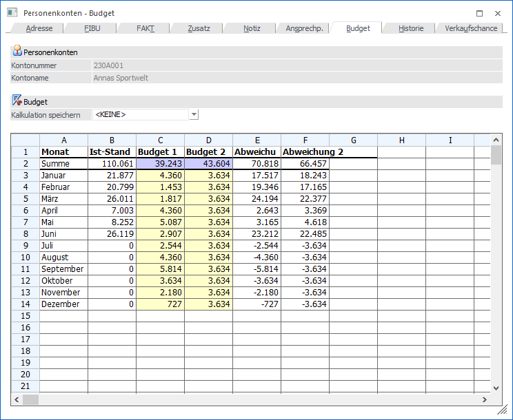
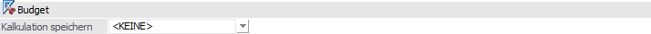
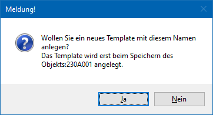
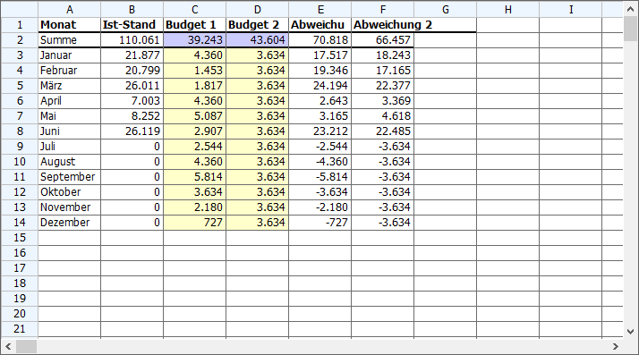

Durch Anklicken des Registers "Budget" im Personenkontenstamm öffnet sich die Budget-Eingabe, wobei das Budget wertmäßig erfasst werden kann. Die Spalte IST-Werte ist hierbei automatisch mit den aktuellen Werten gefüllt.
Hinweis
Es handelt sich hierbei um ein einstufiges Budget, ohne weitere Unterteilungen nach z.B. Kundengruppe, Vertreter, etc.. Solche Budgets müssen mit dem Programm "Budget - Verwaltung" erstellt bzw. verwaltet werden.

Folgende Eingabefelder, Einstellungen und Informationen stehen zur Verfügung:
Personenkonten

Ø Kontonummer
An dieser Stelle wird die Kontonummer des ausgewählten Personenkontos angezeigt.
Ø Kontoname
Hier wird der Kontoname des aktuell gewählten Kontos dargestellt.
Budget

Ø Kalkulation speichern
Mit Hilfe dieses Auswahlfelds kann der Aufbau der Tabelle "Budget" in unterschiedlichen Ansichten / Sichtweisen gespeichert und im Anschluss geladen werden. Für das Speichern einer neuen Ansicht kann der Eintrag "<KEINE>" überschrieben werden. Wird der neue Eintrag durch Drücken der Taste Enter bestätigt, dann wird die Meldung

angezeigt. Wird diese mit "Ja" bestätigt, so wird ein neues Kalkulationsschema mit dem eingetragenen Namen gespeichert. Wird die Meldung mit "Nein" bestätigt, gelangt man wieder in die Auswahlbox zurück.
Achtung
Das so hinterlegte Kalkulationsschema wird erst dann gespeichert, wenn auch das Personenkonto, welches gerade bearbeitet wird, gespeichert wird.
Tabelle "Budget"

In den Spalten "Budget I" und "Budget II" können zwei Budgetansätze hinterlegen, wobei die Eingabe der Budgetwerte global für das gesamte Jahr erfolgen kann. Hierbei würde der Jahreswert automatisch auf die einzelnen Monate umgelegt werden. Nicht durch 12 teilbare Werte werden auf die Monate aufgeteilt.
Hinweis
Werte mit Nachkommastellen werden sofort bei Eingabe auf ganze Zahlen gerundet.
In den nachfolgenden Spalten "Abweichung I" und "Abweichung II" wird die - mittels Formel - automatisch vom Programm berechnete Abweichung zwischen den IST-Werten und den Budgetansätzen ausgewiesen.
Grundsätzlich ist die Tabelle frei definierbar, d.h. es können selbsttätig Änderungen an der Berechnung der einzelnen Werte (ausgenommen der IST-Werte) vorgenommen werden. Es können auch neue Berechnungen hinzugefügt werden. Dazu gibt es die Möglichkeit, Kalkulationsschemata zu speichern.
Durch Anklicken des Buttons "Konteninfo" wird eine Übersicht mit allen erfassten und gebuchten Werten sowie den IST-Werten angezeigt. Dabei werden die Werte sowohl in Zahlen als auch grafisch dargestellt.
Verarbeitungshinweise
Die Tabelle mit dem Kalkulationsschema funktioniert im Wesentlichen gleich, wie eine Excel-Tabelle. Nachfolgend werden einige Befehle aufgelistet, die in der Tabelle Anwendung finden können:
Ø =SUM
Mit dem SUM-Befehl können beliebige Bereiche einer Tabelle addiert werden.
Beispiele
ü =SUM(A1+A2)
Addiert die Felder
A1 und A2
ü =SUM(A1..A5)
Addiert die Felder
A1 bis A5
Ø =
Mit dem = Zeichen wird symbolisiert, dass eine Rechenoperation folgt. Dabei können alle Grundrechnungsarten (+ - * /) verwendet werden. Dabei kann sowohl mit Spalten als auch mit fixen Werten gerechnet werden.
Beispiele
ü =(A1 / A2)
Der Wert von A1 wird
durch den Wert von A2 dividiert.
ü =(A3 * 5)
Der Wert A3 wird mit
5 multipliziert.